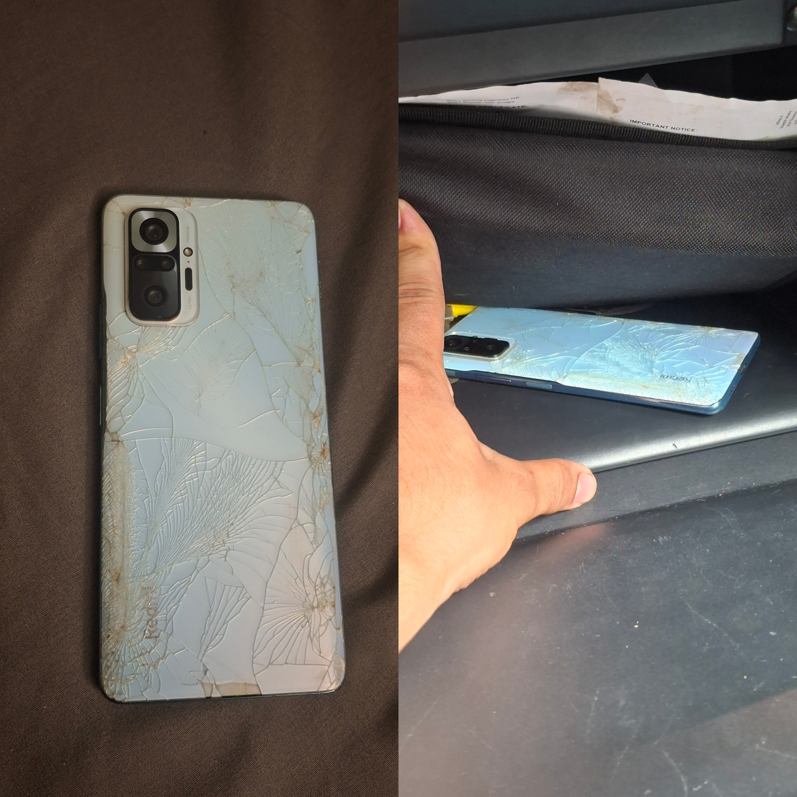
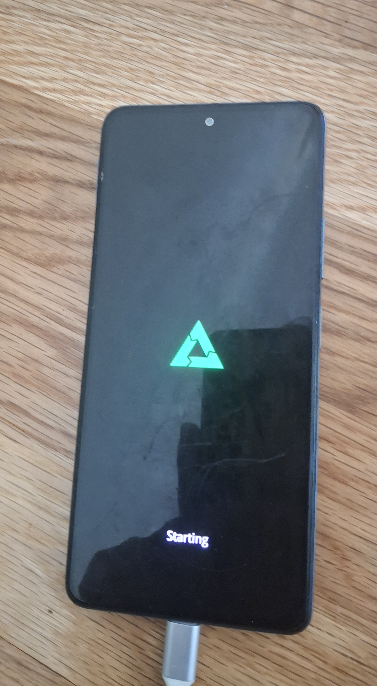
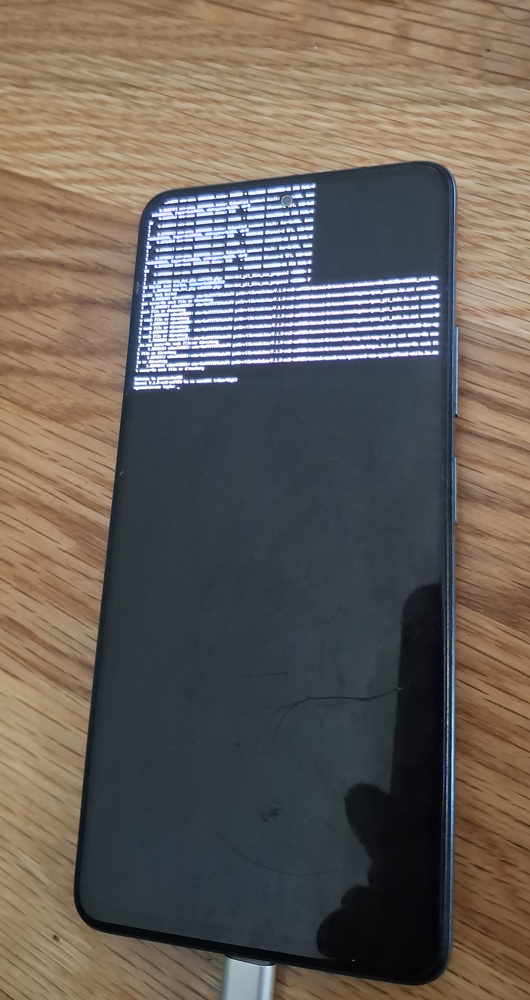
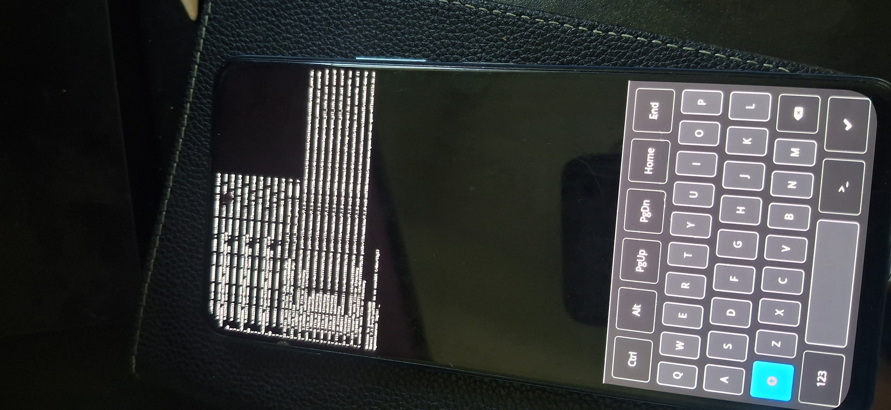
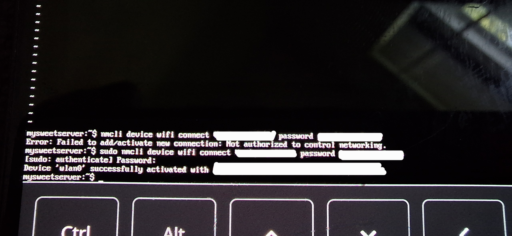

fastboot devices. Your phone should return its serial number. If it does, you're good to proceed but if it doesn't return anything, make sure steps 1-3 are done correctly. 
chmod so that the user you are running as can execute that file. 
Github: https://github.com/1SUSHANT1/repurposing-old-phone
This paper is only meant for Android phones.
This paper is being written as I go, so I have no idea what comes next.
This paper undermines the value of terms and conditions, and warnings with instructions such as 'Rapidly click through the warnings', 'Ignore the warnings', 'don't be hesitant to download free official tools from shady websites' and much more. Before adapting anything from this paper to your setup, evaluate every click of a button, and make sure you read the terms and conditions, and warnings, and feel free to stop if you believe following the instructions on this paper will harm your computer/phone.
This paper is not meant to be a general step by step guide. This paper is specifically meant for a Redmi Note 10 pro. For Xiaomi phones, this paper can be a very close guide, though at times you have to make your own judgement. For all the other Android phones, I recommend reading through the paper first, before following along.
After you are through following along with this paper, you might not accomplish what you were after. This paper does have fallback, and recovery plans, but worst case scenario, your phone will be damaged beyond the scope of this paper. All the disclaimers and warnings on your phone and laptop will repeatedly remind you of that, and following along means the acceptance of the risk.
You should be using Linux OS or should have a Linux VM that supports USB passthrough.
What is this paper really about?
->It is about taking your old phone and turning it into a Linux server capable of hosting a website. More importantly, it is about the journey of figuring out how to get there, working through roadblocks, debugging unexpected problems, and learning how the pieces fit together along the way.
What is considered success for this project?
-> If the phone can boot up and host linux operating system with at least USB networking, Storage and Wifi working, this project will be considered successful because that's the healthy minimum for a headless server. This means that your phone's screen,
camera, mic, biometrics, and other functionalities might not work and the project can still be considered successful.
I need a Raspberry PI. At the very minimum, I need to host a website. How much does one even cost these days anyway? Holy Guacamole, 200$? I could get a fully functional smartphone for that money. Who pays 200$ for a fragile, ugly looking tiny board? Well speaking of which, aren't Android phones just Linux machines? And whatever happened to my old phone? (which I dropped from the fourth floor, cracked the screen, camera went blank but somehow all the other operations were fine, back in New York and has been living inside my car's glove-box ever since). I was so crazy to get that phone. Just off of high school, I needed something powerful to play games and show off to my friends. I specifically remember it was Redmi Note 10 Pro, Snapdragon 732G processor, and 6GB RAM(I know this because I have recited these specs to each one of my friends at least twice). It has enough processing power to handle my website and a little server plus it comes with a battery! a built in UPS. I wonder if I still have it.
-
So here's the plan: Bye Bye Android, Welcome Linux. (real discriptive, guy)
First, let's try to unlock the bootloader so the phone lets us run foreign operating systems. So, let's enable developer options. Settings -> About Phone -> Tap on MIUI version until the phone tells you that you are a developer(pretty easy to become a developer huh?).
Let's now browse the developer options. Settings -> Additional Settings -> Developer options. After scouring all the available options, the ones I found helpful for my goal were OEM unlocking, Mi Unlock status, and USB debugging.
To limit the amount of damage we can do, let's just enable OEM unlocking to allow bootloader to be unlocked, and USB debugging to send commands to the phone from laptop via USB for now. We can come back here if we need anything else.
Now let's browse to Mi Unlock Status. It will give you a warning on the consequences of unlocking your phone, but if you're as determined and low on money as me, you'll click through all the warnings. The steps tell you to put a SIM card in the phone, and add a MIUI account on your phone using mobile data.
I have a physical SIM which I remove from my new phone, and mount in my old one. Now if you are running an eSIM, you might be saying "uh-oh". But with eSIM, you can always sit back and cry (I do not know what to do here. Maybe you should run to the store and get a SIM card).
The next step is to download the unlock tool from https://unlock.update.miui.com. You can find this link in the MI Unlock status option inside developer options. If you go to the website, and click Unlock now,

A Chinese bunny man will apologize to you and will try to redirect to the forums app (what good is that going to do?).
But a quick google search reveals that the tool is called Mi Unlock app, and the latest version is: 7.6.727.43.
The official Xiaomi website was unhelpful so I browsed to https://www.getdroidtips.com/download-mi-flash-unlock-tool-for-windows/. The nice man here had some useful information and details on the tool, and the download link.

Make sure to download the latest version available. Now many of you if not all will be hesitant to download an official tool from a website like this, but this is what I did and haven't noticed any free loaders yet (though I can't deny their existence). Proceed at your own risk I guess. By the time you try this, maybe Xiaomi will allow the download of the official tool from their website too.
Now there's another problem. Remember when you got so mad at Windows and decided to do away with Windows forever and installed Ubuntu?(no? well I do). So turns out, most of the tools,
applications and services are released for Windows. And you have to run some third party service to host your Windows app on Ubuntu. I accomplish this with wine. Now you could, get
drunk and follow along but I was talking about wine the Linux utility. Wine can host the .exe file in Ubuntu. To install wine, update your repository with sudo apt update, and
install wine with sudo apt-get install wine.

In my case, I already have it installed but if you're installing it right now, at some point, you have to answer y to are you sure? type question.
Now with wine installed, let's browse to the downloads folder. When unzipping, make sure to put the .zip file on a folder to avoid making a mess. And now, just run unzip fileName. With the file unzipped, find the appropriate .exe file (in my case, miflash_unlock.exe) and run it with wine with wine fileName.

This page indicates that we should already have a Xiaomi Account on our phone. Let's go back to our phone, Settings -> Xiaomi Account and create an account. Now with the same credentials, log in to the unlock tool. If the tool gets stuck on authentication, it is because you do not have the latest tool installed.
After logging in, feel free to read the disclaimer and click Agree to continue.

Like the tool suggests, power off your phone. After the phone is completely off, press volume down button + power button to enter the fastboot mode. Once the device displays FASTBOOT, let go of the buttons and connect the phone to your laptop via a USB cable.
And then wait for it, wait for it.
Trouble.
I have been waiting, for thirty minutes! with the phone in fastboot mode and plugged in, and the app still says "Not connected to the phone". There is no reason for wine to not work.... unless, wine doesn't have access to USB devices. OK, let's go back, and give wine the permission to read USB devices, and come back.
Now I'm not a wine expert (they all taste same to me). So let's view the wine man pages to find info about access to USB devices. Trouble. The man pages for wine don't even mention USB!

Let's scour the internet to find any info on wine with USB.
MAJOR ROADBLOCK.
Turns out, If a Windows application specifically expects raw USB access (e.g., it uses a Windows USB driver), Wine often cannot provide that. Some applications work, but others require a real Windows installation or a virtual machine with USB passthrough. A user on Reddit says "Use a virtual machine with a Windows guest in it. Wine has never been designed to support hardware access, it's an API-translation layer. Presenting Linux devices to Windows drivers is a entirely different task", and rest of the internet seems to agree with him. Now who are we to disagree with random wise guy on the internet? So now, Let's set up a Windows virtual machine.
I am aware that a lot of the users are thinking that they didn't want to drink wine and their Windows works fine. Well, here we meet again. Wine tasting went horribly bad so I'm now using an Windows VM which should be very close to the real Windows machine.
I am running Windows inside VirtualBox, but the process should be similar for any other VM or the real Windows machine. Download the Mi Unlock tool and unzip it again but inside Windows this time. Let's now login to the tool with our Xiaomi Account, Authenticate and press agree.
Strange, the tool now running on windows also says "Not connected to the phone". Let's unplug the phone, boot it in fastboot and that should fix it. After the phone screen says FASTBOOT, plug the phone to the laptop back in and then wait for it, wait for it.
I have been waiting, for thirty minutes! Ah! I see what happened, VirtualBox doesn't automatically get all the connected devices. You have to Devices -> USB and you should see your phone. Click on your phone and come back to the unlock tool. Then wait for it, wait for it.
I have been waiting, for thirty minutes! (alright I'll stop). The tool still doesn't detect the phone. To diagnose further, let's open Device Manager, and we can see our phone listed under Other Devices as Android with a question mark and exclamation mark. The phone isn't properly recognized by Windows. Most likely it is because the phone is in fastboot mode and phones act differently when plugged in as regular Android vs in fastboot.
Now as every self respecting human, let's double click on Android to see the issue. The prompt reads "There are no compatible drivers for this device". Naturally, Let's click Update Driver.

There are options to Search automatically for drivers, Browse my computer for drivers, and Let me pick from a list of available drivers on my computer. Now if any of these works for you, you should be good to head back to the unlock tool and proceed but unfortunately for me, I couldn't find any Android drivers using this method.
But it's not that big of a problem. It just means that we have to get the driver. And the nice folks at Android studio have just that!

We need the Google USB Driver. If we search for Google USB Driver, first website that comes up is from android studio. Here is the link if you can't find it https://developer.android.com/studio/run/win-usb. As the website states, The Google USB Driver is required to perform ADB debugging on Windows with Google devices. This is exactly what we need.
Let's download the file. It will be a .zip file so you will need to unzip it. This should be all. Let's head back to device manager, Other devices -> Android -> Update Driver -> Browse my computer for drivers -> Browse and point it to the unzipped Google USB Driver and press OK.

Now if you are turning red and if there is a sudden urge to break your laptop, just relax. The same thing happened to me but it will work out.

All this time modifying Linux config files (assuming you did because it's going to get tricky if you don't have basic knowledge of it) will help you modify a Windows file. Under the usb_driver folder, find android_winusb file and open it with notepad. We see that this file has names of manufacturers, and device architecture followed by instructions to install drivers for specific versions of the USB devices. Let's go back to Device Manager -> Other Devices -> Android -> Events. Under Information, you find the hardware ID for your device which will look something like USB\VID_18D1&PID_D00D (make sure to get substitute your own hardware ID in the following sections). If we go back to the android_winusb file and try to locate this ID, we won't be able to, and the reason driver didn't install the first time is because the hardware ID didn't exist in the config file.

So this means we will have to modify the android_winusb file to install the driver for our phone's hardware ID.
We do this by simply adding the instructions to the file. Now I am not a android_winusb expert either. I will make a best guess by looking at the syntax of other lines in the file, and you should also do the same for your phone using the syntax on the file, your phone's manufacturer, and your phone's architecture OR, get help from android studio.
First, locate the correct section. In my case it is [Google.NT amd64], because that's the name of the manufacturer and architecture of my phone. You can also find the correct section for you following this logic.

I see there are two different values on the right hand side of the assignment operator. %SingleAdbInterface%, and %CompositeAdbInterface%. Now using my pattern recognition skills (make sure you do the same but you can look at my work for reference), I look at the right hand side of the assignment operator. The RHS value for %SingleAdbInterface%, is shorter than %CompositeAdbInterface%. Looking at my hardware ID, USB\VID_18D1&PID_D00D, it is the short one! so let's add the line %SingleAdbInterface% = USB_Install, USB\VID_18D1&PID_D00D at the end of the section , save the file, hope for the best, and exit.

Now just like before, Device manager -> Other devices -> Android -> Update drivers -> Browse my computer for drivers -> Browse, and point it to the Google USB driver usb_driver folder and press next.
Still hold on to the urge to destroy your computer.

This doesn't necessarily mean that the modification didn't work. It just means that we introduced something new to the android_winusb file but we didn't add the hash for the file in the specified catalog file. The system is just trying to protect us because it thinks the modified file is malicious. Now with the knowledge the we're the ones who did the hopefully unmalicious modification, we have two options: Solve the hash situation, or turn this protection off.
I will go ahead with Disabling the Driver Signature Enforcement off. Hold shift, then restart the PC. As the PC is preparing to restart, spam F7. The system will prompt you to choose an option. Go to troubleshoot, Advanced Options, Startup Settings. Under Restart to change Windows options such as:, notice the line, Disable driver signature enforcement. Now when you press restart, you can disable the enforcement and install the driver.

After the system powers on, it will prompt you to choose an option. Press 7 which is the option to Disable Driver Signature Enforcement.

(Hopefully) Finally, Device manager -> Other devices -> Android -> Update drivers -> Browse my computer for drivers -> Browse, and point it to the Google USB driver usb_driver folder and press next.

Ignore the windows warning, and select the option to Install driver anyway and the driver should install! Notice inside Device manager, the Android device is now running Android ADB Interface.
If you forgot why we were doing this, we were just trying to get Mi Unlock tool to detect the phone. Make sure to keep the phone in fastboot mode, and open the tool, login then...

Now you can see that the phone is connected, and now we have the option to Unlock the phone. Just press the unlock button, rapidly click through all the warnings and then...

Oh well. Now we wait. Unless you've got an '81 DeLorean running flux capacitors.
Ahem Ahem.. Teaching moment here. I know you are excited to get the server up and running as soon as possible. In doing so, many people skip the most important plan, backup because it looks unnecessary, and there is hope that things will work out the first time. But welcome to the real world, where things do go wrong. Me personally, I won't ever work on my car without taking pictures of the original configuration first, never proceed on a VM without a snapshot, and never straight wire a fuse (that was a long time ago). In this case, I won't move ahead without creating a backup in case your phone and Linux don't see eye to eye. We accomplish this by making a recovery image of our phone's firmware that we can flash onto the phone.
There are two options. Nandroid backup and Factory image. Nandroid backup captures your phone in the current state, so if anything goes wrong and you flash this image, your phone returns back to the previous state with all your apps and settings (wow let's pick this one). Factory image is the image provided by your phone's manufacturer that will return your phone to the factory version and settings(booring).
Nandroid backup isn't really feasible for us because it requires the phone to be already unlocked. But to unlock it, we do need to wipe everything. So sadly, if there is anything on your phone worth saving, you should create your own backup now.
Let's go ahead and download the factory image. Let's first figure out what phone you have. Go to Settings -> About Phone and you should see your phone's name. But the phone's name alone isn't the most reliable option because phones may have same names even if they are running different firmware. So let's go one step further to All specs or Detailed Specs. You can find your phone's model number here. Mine is M2101K6G. Before we move on, take a screenshot and back it up so you know what you started with. Let's now google yourPhone'sModelNumber factory image.
There are two types of images, Recovery ROM and Fastboot ROM. Recovery ROM is used for partial upgrade, and Fastboot ROM is a complete firmware package. Since we are working with something that can turn your phone into a brick, make sure you download Fastboot ROM which can unbrick dead devices. If you can find the image from your phone's original manufacturer, you can go ahead and download it, just make sure all the details match. For me, I couldn't find the image from the original manufacturer so I'm downloading it from https://xmfirmwareupdater.com/miui/sweet/stable/V14.0.8.0.TKFMIXM/.

Notice I'm downloading it on Linux because we won't be using another one of the flashy windows apps to do the flashing. We will use fastboot and ADB, Linux tools to accomplish the flash.
After the image finishes downloading, let's calculate the MD5 hash and compare it to the hash posted on the website. To do this, open the terminal, browse to the Downloads folder and run MD5sum fileName. If the MD5 hashes are the same, the download is successful. If the hashes are different, try downloading the file again to see if that fixes it or try another website but never trust the file.

I still have 5 more days to wait before I can unlock the phone so I will explain the recovery procedure here.
First, let's extract the file we just downloaded. To do this, run tar -xvf fileName.tgz.

After extracting it, browse to the images directory and notice various .img files. These are all image files. We don't know which ones to flash and what order to flash them in. But luckily for us, the flash_all.sh script, which came with the downloaded package, contains pre-written instructions that perform necessary checks to perform the flash and flashes the necessary files in the correct order. Since this is a specialized script, it is not so easy to read but feel free to do so if you like. I'm going with the black box method where I run the script without knowing what's in it (that's if i don't encounter any problems. If I do, I may have to come back to it).
Recovery Procedure:
fastboot devices. Your phone should return its serial number. If it does, you're good to proceed but if it doesn't return anything, make sure steps 1-3 are done correctly.
chmod so that the user you are running as can execute that file.
This is where you and I stop if we don't have to recover the device right now.
Later, there will be instructions to come back and follow the steps all the way to running the script if we do encounter problems. For now, let's just go back and wait until the 7 day countdown is over.
Have 7 days been always this long, or is the government messing with the daylight savings again? Anyway, I have to figure out something to do for the next 4 days. Maybe take a shower. Sniff sniff... nah I'm not due until next week.
Maybe Research. Yes! Let's do some research. Let's at least figure out what operating system to run. I'd be very happy if there is an OS compatible for my phone capable of running mainstream Linux.
Wouldn't be much of a research if I just you told everything now, would it? Rather, I will tell you what I did, and how I did it so you can do your own research with a little help.
First thing I did, was search Redmi Note 10 Pro Linux. The first website that came up was postmarketos.org. Let's see what it has to offer.

It appears that my phone does have some support from the Linux community. In the website, I can see my phone's operating system is maintained by "The sm7150-mainline team". After further digging, The OS is a generic port for for Qualcomm Snapdragon 730/730G/732G (SM7150) based devices that utilize U-Boot and systemd-boot.
This is because phones use SoC, which is a single microchip that integrates all or most of the essential electronic components of a computer. This system on chip is what makes phones so much capable even though they are tenfold smaller than computers and laptops. This follows that phones with similar SoCs can run similar operating systems. This is the reason for postmarketOS is maintaining a single OS for SM1750 family. You might also find(or not find) device specific OS for your phone if your phone is one of a kind.
Further digging shows that the OS for my phone is still in testing category (ouch!). If your phone is under stable category, you're golden. If I navigate to Features, I see that majority of the features still work, with some untested, partial and broken.

This is certainly better than I expected, especially with the screen working, we can see the OS without plugging it on our laptop or using SSH. One thing that worries me is that the Battery feature is under 'partial'. It's hard to be sure what exactly is partial, and the description makes it sounds like the issue is between charging and battery level reporting (I hope this isn't another project waiting for me). Hopefully, this isn't the case for you.
I did look at few other options of OS we can run android phones, and it looks like postmarketOS has the best support for my phone, and it offers mainline Linux to run on the phone. Feel free to browse around and make a decision as to which one you want to go with.I am going with postmarketOS.
Find your phone in the postmarketOS website, and after verifying the details and compatibility for the phone, let's move on to the installation instructions. Please make sure you FOLLOW THE INSTALLATION INSTRUCTIONS FROM THE WEBSITE because your installation process might be very different than mine. If it is, we'll meet again when setup is complete. I recommend reading the installation section anyway and reviewing what I have done before you proceed.
There are two installation methods: Using a pre-built image, and Install with pmbootstrap. Pre-built image is the quicker, simpler method for select devices from 'main', and 'community' categories. pmbootstrap method is for all devices with customization options for developers/advanced users. My phone is not one of the select devices so I will have to use the pmbootstrap method.
I know that some of the people who have to use the pmbootstrap method might be thinking that they are not developers/advanced users. Let me promote you to an advanced user. Ahem Ahem.. Arise Sir Reader (Achievement : Advanced User, Aura+1000 points). Now that you have been promoted to an advanced user, you can follow along with the installation instructions.
Let's now install pmbootstrap. You can get it from your package manager with simply sudo apt-get install pmbootstrap.

With pmbootstrap installed, let's follow along with the rest of the instructions.
After banging my head on the wall a few times, going back and reading the instructions multiple times, I found that when you are prompted to enter the vendor, you aren't supposed to blindly put the name of your vendor. Notice in the screenshot below(top half), I couldn't find my phone, xiaomi-sweet. Once I saw that, my world almost fell apart because if the setup existed (the website suggests it does) and they hadn't uploaded it yet, I'd have to wait until they did and I wouldn't be able to complete this project when the phone unlocks.

A few sentences that came to my rescue were "This device is supported as part of a generic port. Refer to Generic SM7150 (qcom-sm7150) for installation instructions and more information.", and "Some devices are supported as part of generic ports , meaning that a single port supports multiple similar devices. In some of those cases, you may need to choose the vendor and codename for the generic port instead - check the instructions on your device page if you can't find it in the device list for your vendor." So, instead of entering the actual vendor, I went to the generic port page and found that the input pmbootstrap was looking for was: qcom - sm7150, from the section :Codename: qcom-sm7150.

Once I entered qcom for the vendor, I can see the codename options now mention, sm7150, which is the correct one in my case.
You can proceed with the setup process. There will be multiple questions, but the default options were good for me most of the times. Make sure to carefully read the options, and get help if you want to make sure you set it up right.

Now pmbootstrap is initialized, and knows what device we are working with along with all the information we just provided. Let's move on and generate the image. This is a 2 step process, where instead of directly writing the files to the phone, pmbootstrap first creates all the necessary files on your computer and then flashes these files to your phone.
As the installation instructions suggest, let's run pmbootstrap install. There are parameters and flags you can combine with it but none of them apply to me.
Right off the bat, I get warnings. These are warnings of version mismatch between the pmbootstrap we have and the pmbootstrap which is currently serving the files. We do not have the latest pmbootstrap version.
As careful of a reader I am, I go back to this line: "The easiest way to install pmbootstrap is through your distribution's package manager. If it's not available in the repositories, or if the packaged version is outdated, you can
install the latest version directly from git"

Looks like pmbootstrap repo isn't properly maintained in my OS distro. I stopped the installation process with ctrl+c, removed pmbootstrap from my laptop using pmbootstrap zap, and apt-get remove pmbootstrap. Just to make sure there is no overlap with the new pmbootstrap, I also ran apt purge pmbootstrap to start with a clean slate.
You can follow this link, install the latest version directly from git, and install pmbootstrap using git clone, which should be the latest version and hopefully we don't get any warnings this time.

IF THE pmbootstrap VERSION ON YOUR OS's REPOSITORY is OUTDATED, CONSIDER INSTALLING IT FROM THE OFFICIAL GIT REPOSITORY.
After following the instructions on the page, let's again run pmbootstrap init. This time, I noticed something that I had speed-run through last time. We have an option to install additional packages, which will be available on our phone once it boots up with Linux.
Technically, you can get everything working using USB networking but this is like a shortcut, where the packages you specify are already available on your phone, so I am specifying: python3,git,nano,vim,curl,wget,htop,openssh,tmux. Not bad formatting, this is how you should enter them. These packages are custom to my need, so feel free to specify any packages you'd like.

After pmbootstrap is initialized, let's now run pmbootstrap install. This is an automated process which builds the image from the options you chose in pmbootstrap init. Now when you run it this time, there should be no warnings, because the version running on the server, and the version of our package are both latest. Feel free to skim through the installation process to have an idea of what to expect after flashing Linux.

In the flashing section of the installation process, a line says "At this point, read the Installation section in your device's wiki page. The wiki page for your device might contain additional information or prerequisites for flashing (for example, some devices will require you to flash a secondary bootloader like lk2nd before flashing the other images)". So let's go back to out phone's wiki page to see if there is any info there.
Sure enough, for my phone, there is a pre-requisite secondary bootloader that should be flashed before flashing the Linux image. Your phone may have a different secondary bootloader required or none. If there is a secondary bootloader, you have to flash the bootloader first, and then flash the linux, but if there's none, you can flash Linux right away.

Following the link for U-boot and matching the correct vendor and codename for your device, you can download the U-boot image. This time, the vendor name and code names are your phone's actual vendor name and code name, for me, it's xiaomi-sweet. After downloading, calculate the appropriate hash from your terminal like we did with the fastboot ROM, and make sure that it is the same as posted on the website.
One thing to note. Installing U-Boot section is followed by Pre-built Images, and pmbootstrap in the screenshot above. However, we are not using that progression, installation method is either Pre-built Images, or pmbootstrap, in our case, it is pmbootstrap method. So don't run all the commands you see in progression here.
We have everything we need to perform the flash. Only two steps remain to flash the Linux OS onto our phone. First, flash U-Boot then Second, flash pmbootstrap flash_rootfs.
However, there is one problem.

I still have 75 hours of waiting to do before my phone is unlocked! How is the waiting period to unlock a phone more than the waiting period to buy a gun?
Anyway, being the productive person as I am,
I had started to build a website yesterday. Problem? I was done yesterday!(even tho more work will come up as I progress with this paper).
It is because the website is going to be very simple as it will be hosted even before the server is hardened, so to limit the attack surface, it is just bare boned website with just a few pages and very basic functionalities.
Read about it here: Initial Configuration of My Website
Something to take away from this section is that this section is more about following the instructions correctly rather than being a computer genius.
Now with that being said, I will be pacing my room for the next 75 hours. I suggest you do the same.
WARNING: THIS IS YOUR LAST CHANCE TO BACK UP YOUR DATA.
Welcome back. Let's jump right in and unlock the phone. Follow these steps:
And finally, the phone is unlocked!

The process was so quick, I almost didn't believe it worked. My phone rebooted on its own so I speed ran through the android setup process. To confirm the unlock status, go to your settings, enable developer options, and under developer options, look for Mi Unlock Status, and it should say 'Unlocked'.
Warning: Do not follow these instructions if postmarketOS installation process for your phone didn't mention a secondary bootloader.
NOTICE: This section assumes a secondary bootloader is already setup from the postmarketOS Setup section.
We already set up the Secondary bootloader, U-Boot in my case earlier in the postmarketOS Setup section. Make sure you follow the instructions on postmarketOS for the exact steps for your phone. Here are the steps I followed:
fastboot erase dtbo.fastboot flash boot u-boot-sm7150-[vendor]-[device].img. Or in my case, fastboot flash boot u-boot-sm7150-xiaomi-sweet.img
Notice: This section assumes the pmbootstrap init and pmbootstrap install have already been completed in the postmarketOS Setup section.
Hit the iron when it's still hot! Don't boot out of the fastboot mode after setting up the secondary bootloader. Follow these steps:
pmbootstrap flasher flash_rootfs.
Now you should see the phone booting postmarketOS. Just login with the password you set during pmbootstrap install and you should be good to go.
Congratulations!
Bye Bye Now.


What happened? Oh! the keyboard didn't show! Ok, the same thing happened to me. Amidst cussing out the postmarketOS people, I thought that maybe they had already thought about this. Turns out, they did!

This page mentions that all devices will have the static address of 172.16.42.1/24, so you can plug the phone in using usb cable and run ssh user@172.16.42.1 from your terminal and using the username and password, you can login to the phone, and setup everything. If this works for you, you can go ahead and play around, but unfortunately, like LITERALLY EVERYTHING ELSE, it didn't work for me.
So I was left with my phone running Linux and with no way to talk to it. I tried SSH, didn't work, I tried adb devices in hopes that I can use the keyboard from my laptop and that didn't work either. All of this indicated that the phone should already have something running that lets me interact with it. This means making a new image with the appropriate changes.
I ran pmbootstrap zap to get rid of the old files. I was aware that pmbootstrap init lets me add additional packages, and I just have to read carefully this time and add an interface in the flash image that makes the phone intractable. Carefully navigating through the initialization process, I was prompted to select among 'Available user interfaces', and I selected "buffyboard: Plain framebuffer console with modern touchscreen keyboard support". Select all the other options same as before, run pmbootstrap install, and flash the image again.

Now when you boot the phone up this time, the keyboard will still not show. But relax, the keyboard is still there, you just can't see it. On the lower half of your phone, do multiple taps and you will uncover the keyboard, a small LED block at a time. Now you can finally, actually login for real!

EXCITING!!
Now with the phone unlocked and services hopefully initialized, try running ssh user@172.16.42.1 from your laptop with phone connected via USB. If this works for you, you can go ahead and play around, but unfortunately, like LITERALLY EVERYTHING ELSE, it didn't work for me.
But it's okay. Turns out, nmcli was installed with the OS. So, on the buffyboard, you can type sudo nmcli device wifi connect 'yourWiFiSSID' password 'yourWifiPassword' to connect your phone to the WiFi. When the connection is successful, run ip addr to see the IP address your phone obtained. Now from the terminal, you can run ssh user@yourPhone'sIPAddress, and you should be finally able to login and access your phone from your laptop.

If your problem goes beyond all this, your luck might be worse than mine, which would make me genuinely jealous. I suggest making a doctor's appointment right away (Please do your own research. It is highly unlikely that you are completely locked out).
If anything goes wrong during the flashing process, you might have to revert back to android. Please refer to Recovery Procedure and flash the android image before thinking very deeply about if you want to come back and flash Linux again.
I said that the project will be considered successful if the phone can boot up and host Linux operating system with at least, Storage and WiFi working. Until now, we have verified that the phone can boot, host Linux, and connect to WiFi. Let's verify storage. To do this, you can just run df -h from the ssh connection to the phone.

And as we can see, storage does work. The intended minimum objectives do work, so this project is considered successful.
If you want to put this phone to use by turning it into a server, visit the following documents to get started.
Remember when my phone's battery feature was under listed under 'partial' working condition? Yeah I figured out what it meant. It meant that you couldn't charge your phone. AT ALL. So you might think that battery bypass would work? Nope! absolutely not.
So once you install Linux, your phone will keep discharging until it dies. I suspected it might still charge while powered off if some of the original firmware was still present, but nope! doesn't charge.
But it isn't the first problem they've thrown my way since I started this life. I don't think it's impossible to fix either. Worst case scenario, we might have to turn into an embedded systems engineer, discover a hardware bring up while racing the discharging battery. Remember, if you find the solution after the phone dies, too late!

Look at me, I'm racing the battery at 61%. I have plugged in the charger but notice the status 'discharging', and online '0'. It means the phone doesn't detect a charger and it is discharging. My built in UPS turned out to be a built in countdown timer.
thump... thump... thump...thump... thump... (That your heartbeat, buddy?)
If I scared you, kudos to me and check out: How I fixed battery not charging problem and general device care instructionsat Fixing USB Charging By Modifying Device Tree and General Device care.